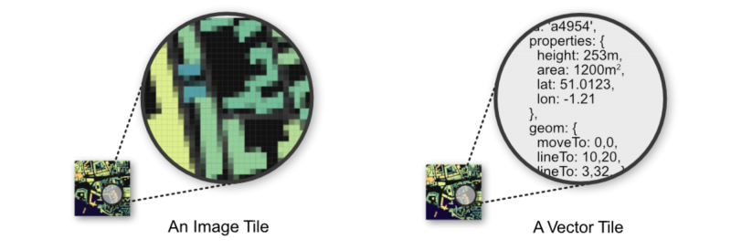

DataViz Festival 2018
Niene Boeijen
This presentation and materials:
https://github.com/NieneB/geo_visualisatie_workshop
About me


Our expertise is open {source; data; standards}
Our power lies in combining cartography, webtechnology with geo.
Utrecht, The Netherlands
We make interactive maps and visualizations.


Geo Data Visualizations
for the web
everything is related to everything else, but near things are more related than distant thingsTobler's first law of geography
Infomation may be infinite. The ways of organizing information are finite.
- Location
- Alpabetical
- Time
- Category
- Hierarchy
Richard Saul Wurman, 1996
Power of Maps
Our brains organise by location
We have no choice but to think and see spatially [1]Power of Maps
Maps organise complex data about the environment.
Reveal patterns and relationships.
What is
a Map ?
Geo Data ?
Geo Data = Data + Location
Vector vs Raster
Point - line - Polygon
Attributes


Maps = Collection of Geo data
Maps are visualized information
Maps allow us to communicate about location using a common framework.
Store data? Framework visualize?
Coordinate system
Communicate locations & distances on the earth's surface
WGS84 EPSG:4326
Web Mercator EPSG:3857
RD New EPSG:28992
Shape of the earth?
From 3D shape to 2D flat map?
The real shape of the earth is too complex to be useful as a reference for measurement.
Geographic coordinate system
3D model
Longitude Latitude
WGS84 EPSG:4326 Lon Lat in decimal degrees
GPS
Standard way to store most geodata for the Web
GeoJSON
Projected coordinate system
Mathematical projection / translation
2D
West WingSpherical/Web Mercator EPSG:3857
Square
RD New EPSG:28992

Geographic Coordinate System:
WGS84 EPSG:4326
Projected Coordinate System:
Web Mercator EPSG:3857
We store data in EPSG:4326, but display it in EPSG:3857!
Projected Coordinate System:
RD New EPSG:28992
Netherlands!
[1] [2]Geo Data Exploration
/ Transformation

I have some data, so what now?
I want more data, where to get it?
Prepare data before putting it online?
Desktop
Qgis , ArcMap
Database
Postgis, SQL
Transform
Geometry
Attributes
Getting my map to the web
Static vs Dynamic
Interactive
Techniques
Static Graphics
Tiled web maps
Vector Tiles
Map servers (WMS, WMTS, WFS)
Static: D3.js
Interactive
Graphic
More about coordinate systems and projections
Interactive: Leaflet.js
Tiled Web Map
Static Background. Raster based
Interactive layers
Interactive: MapboxGL.js
Customized Background map
Interactive Data
Vector based
WebGL rendering!
D3.js
bla
D3 is NOT
a slippy map creator
Not based on tiles!!
Mostly used for:
Charts (pie, line), Tables, Maps, Networks, animation & interactivity
Leaflet.js
Interactive Web Maps
a little History
Digital maps
GIS software
GIS on the Web is not user friendly..
1996 Mapquest first with a web service!

But really slow to load..
in 2004 Endoxon found a way for quick online mapping! map.search.ch
2005 Google Maps took over!
The solution?
Tiles!
Tiles
All tiles size 256x256 pixels
Placed in a grid, sharing boundaries
Seamless map
All these little tiles load way faster than one big map!
We call this slippy maps

Zoom levels
Each zoom level has its own set of tiles!
Zoom level 0: 1 tile for the whole world.
Increases exponentially...
Zoom level 1: 4 tiles
Zoom level 2: 16 tiles
etc.
 Map with tile bounds
Map with tile bounds
Styling & Serving tiles
Tiles are styled and rendered in advance
Tiles are just images on the web
http://tile.openstreetmap.org/5/16/10.png
{kind=link}
/z/x/y

Leaflet.js
An Open-Source JavaScript Library for Mobile-Friendly Interactive Maps
simplicity, performance and usability
Developed by: Vladimir Agafonkin.
Weighing about 38 KB of JS.
Has all the mapping features most developers ever need.
Can be extended with Plugins
Well documented
What Leaflet does not do:
Provide data for you.
Provide the basemap.
Its not GIS
Leaflet is a framework
Leaflet.js Examples!
Layers!
Base Layer
Raster
Data Layer / Feature Layer
Vector
Summary Leaflet.js
Web Map Building blocks
Data, styled, tiles, server:
Base Layer
Additional Data:
Vector Layers
Interface and Interaction
Zoom, panning, clicking etc.

Vector tiles!
Mapbox GL.js
From Raster to Vector
No colours
Arrays in a 256 x 256 matrix
Same tiling schema as Raster png tiles.
Binary format
Simplifies geometries
Disadvantages Raster Tiles
No interaction with objects
No information available about objects
Multiple visualizations = multiple tile sets
Advantages Vector tiles
Rendering is done on client side not by the server
So different clients can style a map different
Small tile size. So faster data transfer.
High resolution.
Direct access to feature information.
Standards
Mapbox Vector Tile Standard.Based on the binary protocal buffer (.pbf) from Google.
Standard already used by Esri.
Web Mercator projection, Google tiling scheme.
Formats
.mvt - .pbf
.mbtiles
Where to get them?
Download
Make with Mapbox Studio
Hosted
Mapzen
https://tile.mapzen.com/mapzen/vector/v1/{layers}/{z}/{x}/{y}.{format}Licences..
Bake them your self
Host yourself?
Use locally offline
Tile servers
The Netherlands!
NL Amsterdam Datalab.
"https://t1.data.amsterdam.nl/wm/{z}/{x}/{y}.pbf"Soon PDOK/Kadaster?...BRT of the Netherlands!
How to visualize them?
Mapbox studio
JavaScript
Let's code!
Mapbox GL.js example
WGS84 data only..
PDOK vector tiles
GeoJSON data earthquakes
Summary
JavaScript Libraries for Mapping
More info?
Workshop online:
https://github.com/maptime-ams/vector-tiles-workshop/wiki github.com/NieneB/webmapping_for_beginnersFeel free to contact me!
Thank you!
Niene Boeijen
niene@webmapper.net